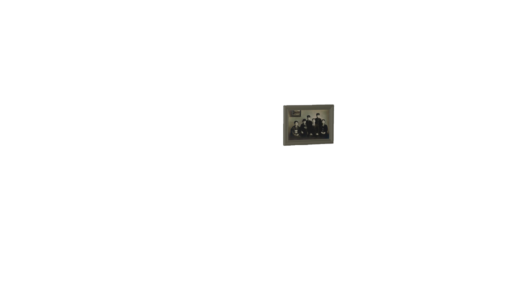
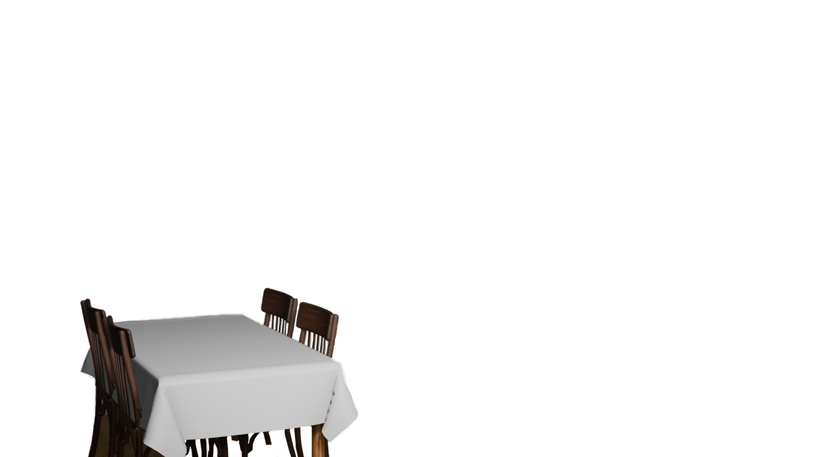
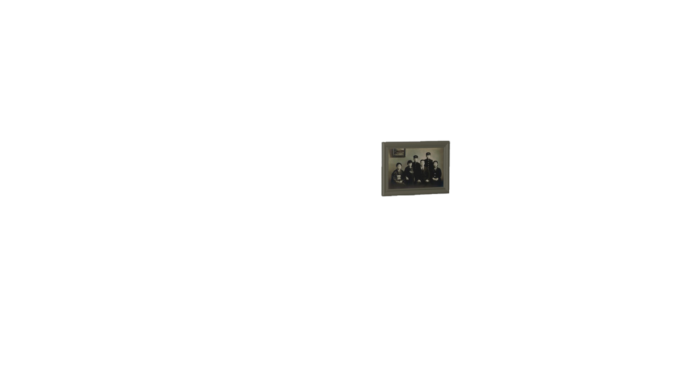
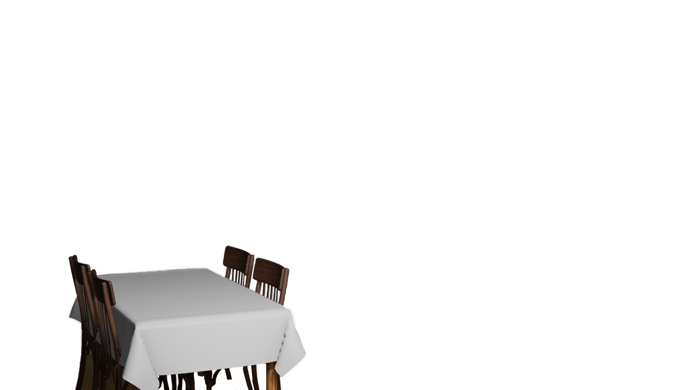
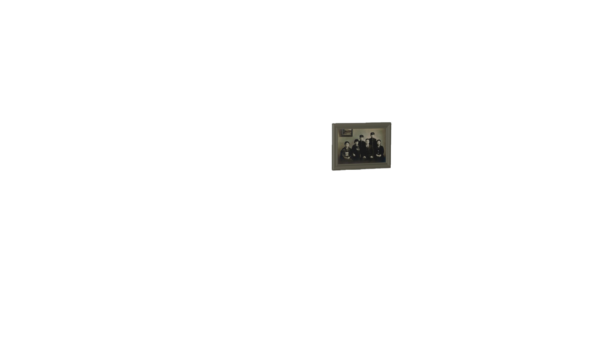
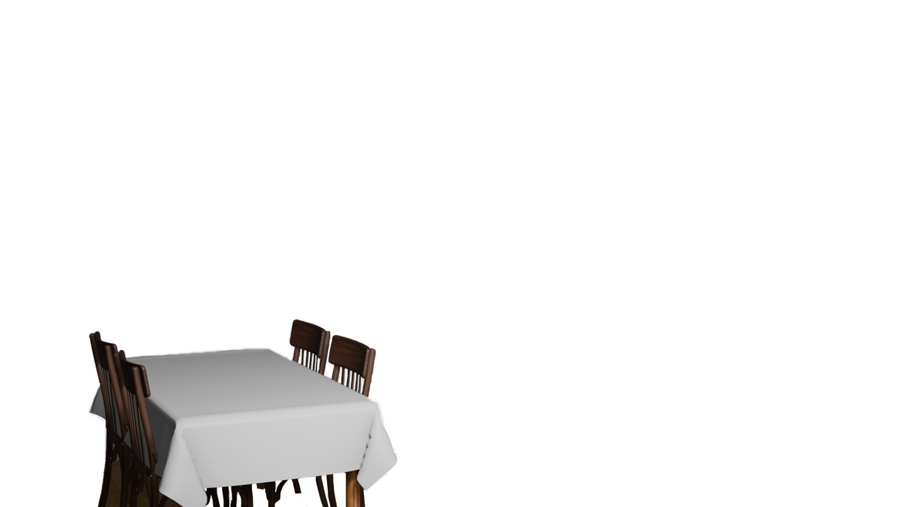
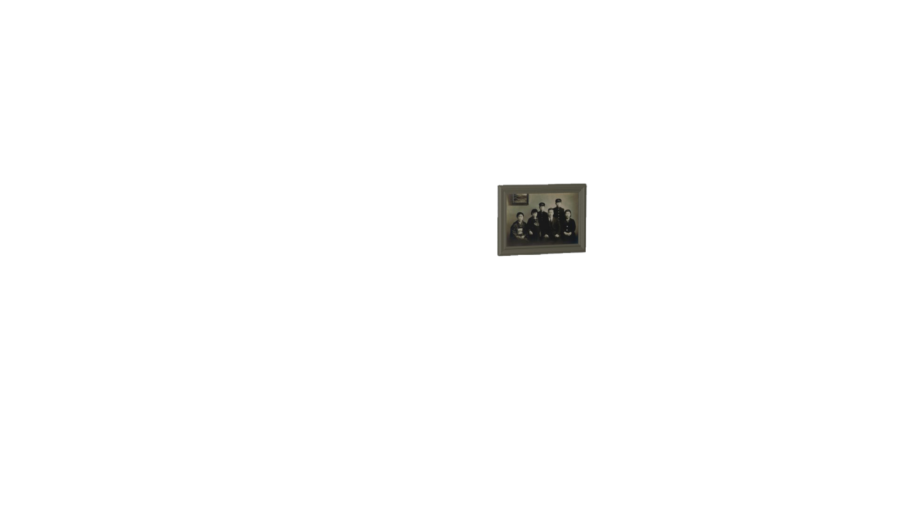
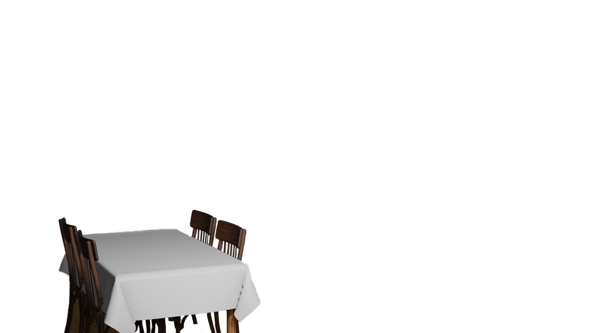
 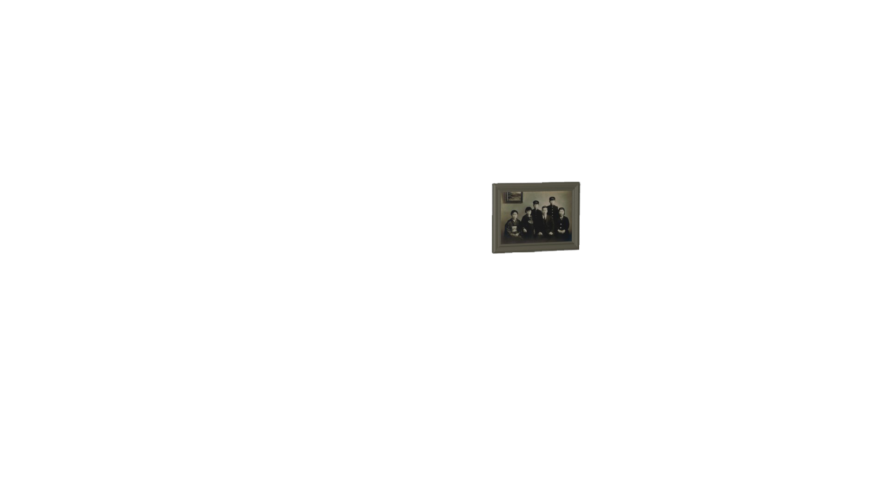
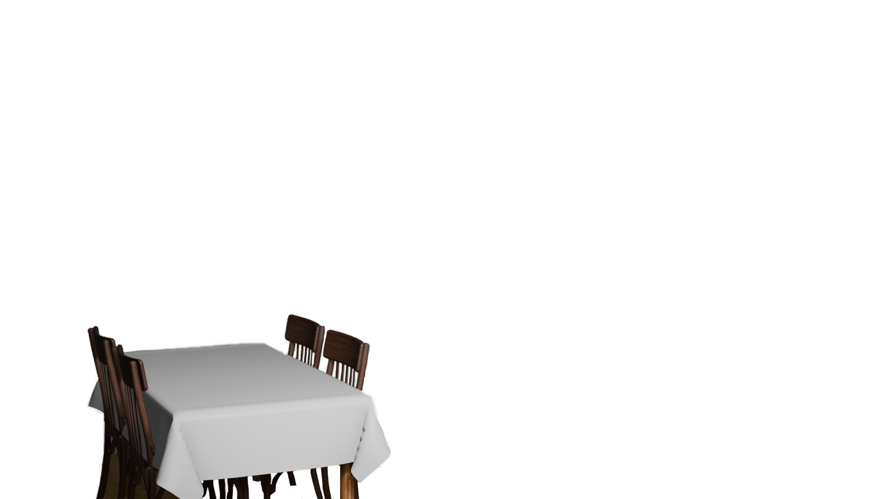
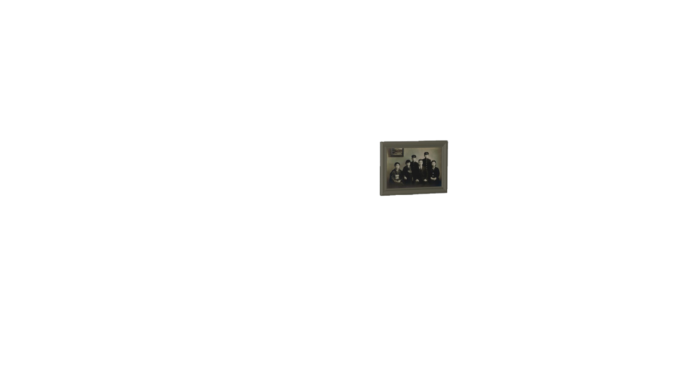
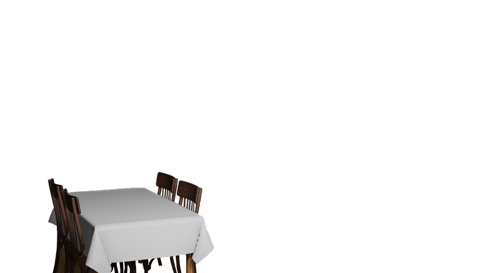
Yayoi Kusama entretient depuis l'enfance une relation difficile avec sa famille, et plus particulièrement avec sa mère. Issue d'un milieu traditionnel japonais, sa mère n'a jamais accepté son attirance pour l'art, ni son désir d'indépendance et lui promet une vie d'épouse au foyer. Enfant, Kusama est contrainte d'espionner son père lors de ses infidélités, une expérience traumatisante qui renforce son isolement et son besoin de s'exprimer autrement. Plus tard, sa mère lui finance le voyage vers New York, mais à la seule condition qu'elle ne revienne jamais. Longtemps, Kusama sera considérée comme une honte pour sa famille, mais cette mise à l'écart deviendra aussi la clé de sa liberté artistique.
Yayoi Kusama entretient depuis l’enfance une relation difficile avec sa famille, et plus particulièrement avec sa mère. Issue d’un milieu traditionnel japonais, sa mère n’a jamais accepté son attirance pour l’art, ni son désir d’indépendance et lui promet une vie d’épouse au foyer. Enfant, Kusama est contrainte d’espionner son père lors de ses infidélités, une expérience traumatisante qui renforce son isolement et son besoin de s’exprimer autrement.
Plus tard, sa mère lui finance le voyage vers New York, mais à la seule condition qu’elle ne revienne jamais. Longtemps, Kusama sera considérée comme une honte pour sa famille, mais cette mise à l’écart deviendra aussi la clé de sa liberté artistique.